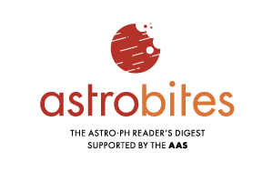
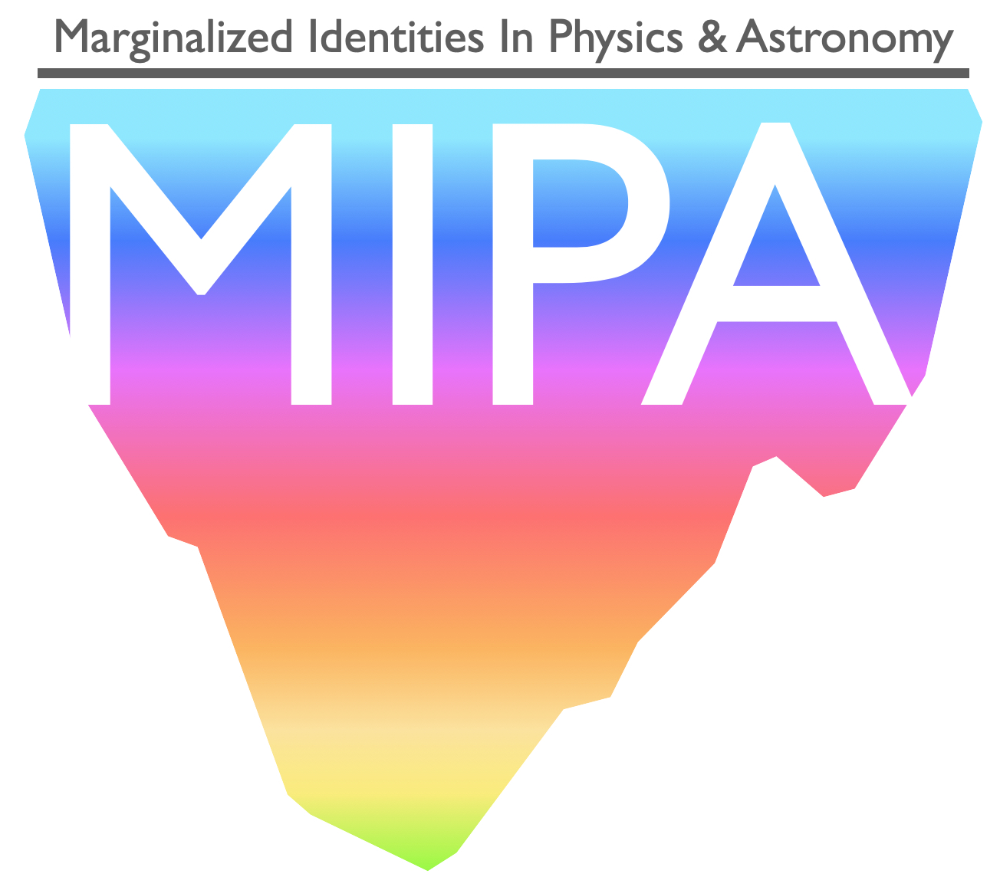

Isabella Trierweiler
PhD Student in Astronomy at UCLA
PhD Student in Astronomy at UCLA

I'm a grad student at UCLA, studying exoplanet compositions using polluted white dwarfs.
I was born in Wuhan, China and spent parts of my childhood in Sweden, Chicago, Minneapolis, and Birmingham, Alabama. I did my undergraduate work at Yale University in Connecticut and finally moved to Los Angeles for grad school!
Outside of science, I spend a lot of time knitting socks and attempting to bake fancy pastries. I love growing plants and have a plot at UCLA's community garden. Other hobbies include running, doodling, and making friends with neighborhood cats.
I help run our departmental outreach program for local LA schools. We provide astronomy demos to help supplement classroom studies and chat to students about life as a scientist. Learn more about Astronomy Live! here.
I also volunteer with UCLA's university-wide outreach event Exploring Your Universe and help organize our department's Summer Observing Workshop, a program to introduce high school students to astronomy research methods.
As an outreach coordinator I also help organize our monthly Astronomy on Tap public science cafes. Follow us at @AoTWestLA to hear about future events!
I am a writer for Astrobites, a grad-student run science blog. We write easily-accessible summaries of astronomy papers, interviews with astronomers, and guides for early-career scientists. Check out the Astrobites website to learn more!
MIPA is a grad-student lead organization that works on building a more supportive work environment for folks of marginalized identities. One of our main functions is coordinating a mentoring program for graduate and undergraduate students. Read more about MIPA here
